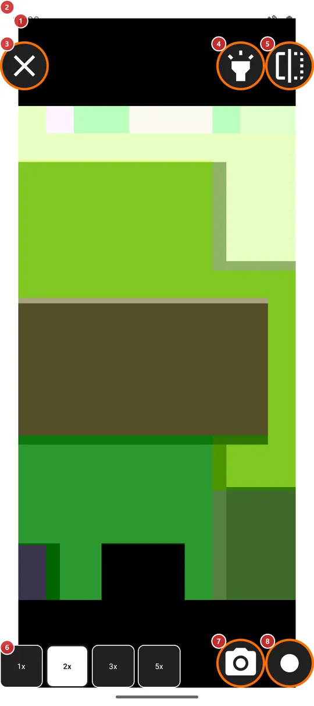
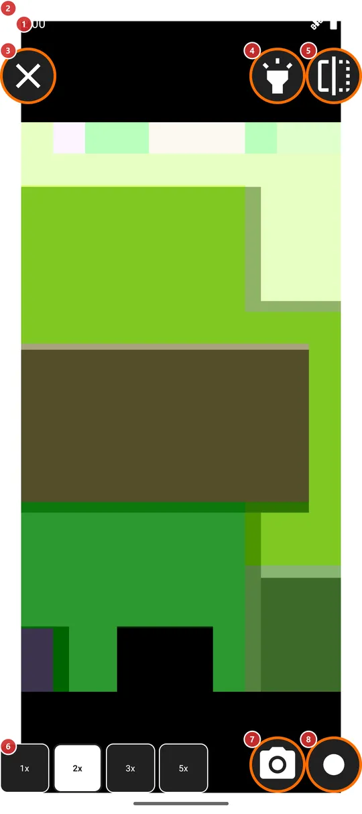

Зеркало
Для чего этот экран
Зеркало показывает фронтальную камеру на весь экран внутри яркого поля, которое освещает лицо, как лампа вокруг косметического зеркала. Пригодится, чтобы поправить лицо или причёску и быстро снять себя на фото или видео.


Порядок действий
- Откройте «Зеркало» из меню программ, с панели программ или ярлыком запуска. На телефоне с фронтальной камерой оно включено по умолчанию. В первый раз разрешите камеру, когда её спросят. Ваше изображение 1 появится внутри яркого поля 2.
- Выберите, насколько приблизиться, кнопками увеличения 6. В первый раз зеркало открывается на 2x, потом - на последней ступени, которой вы пользовались.
- Кнопкой «Фронтальный фонарик» 4 включайте и выключайте яркое поле, если свет слишком сильный или не нужен.
- Кнопка «Отразить изображение» 5 переключает вид зеркала и вид, каким вас видят другие.
- Сделайте фото кнопкой 7 или начните и остановите видео кнопкой 8. При первом видео будет запрошен микрофон.
- Нажмите «Закрыть зеркало» 3, когда закончите. Камера освобождается сразу.
Элементы
Изображение и свет
1Изображение зеркалаВаше лицо с фронтальной камеры - так, как его показывает настоящее зеркало.
Фронтальная камера занимает весь экран. Сначала изображение отражено по горизонтали, как в зеркале, так что левое для вас остаётся левым. Пока зеркало открыто, экран не гаснет.
Разрешение на камеру спрашивается при первом входе. Если вы откажете, зеркало закроется с сообщением, что не может открыться. На устройстве без фронтальной камеры оно не откроется вовсе.
2Яркое полеБелая рамка вокруг изображения, подсвечивающая лицо.
Пока подсветка включена, окно доводится до полной яркости, а белое поле вокруг изображения работает как лампа вокруг косметического зеркала. Повышается только яркость этого окна, а не настройка яркости телефона. Когда подсветка выключена, поле исчезает, и окно возвращается к привычной для телефона яркости.
Кнопки в углах
3Закрыть зеркалоВыходит из зеркала и отпускает камеру.
Кнопка стоит в левом верхнем углу. Если идёт запись видео, она останавливается и всё равно сохраняется. Увеличение, отражение и подсветка запоминаются до следующего раза.
4Фронтальный фонарикВключает и выключает яркое белое поле, не выходя с экрана.
По умолчанию поле включено. Когда оно включено, окно светится на полную яркость, и лицо освещено; когда выключено, экран вокруг изображения чёрный, а телефон использует обычную яркость. Выбор запоминается. У кнопки такое же название, как у программы «Фронтальный фонарик», потому что поле - та же идея: экран как лампа.
5Отразить изображениеПереключает вид зеркала и вид, каким вас видят другие.
Сначала вы видите себя как в зеркале, с поменянными местами левой и правой сторонами. Нажмите кнопку, чтобы увидеть изображение наоборот, так, как камера показывает вас другим; нажмите ещё раз, чтобы вернуться. Меняется только то, что вы видите: фото и видео сохраняются так, как их снимает камера. Выбор запоминается.
6Ступени увеличенияЧетыре кнопки - 1x, 2x, 3x и 5x - приближают лицо.
Активная ступень выделена жирным шрифтом и инвертированными цветами. В первый раз зеркало открывается на 2x, потом - на последней использованной ступени. На большинстве фронтальных камер все ступени выше 1x цифровые, поэтому с ростом числа изображение становится грубее. Увеличение сохраняется, когда вы начинаете запись.
Фото и видео
7Сделать фотоСнимает фото того, что видит фронтальная камера.
Фото сохраняется в папку, которую вы выбрали для фото встроенной камеры. Если папка не выбрана или выбранный ресурс - не папка на устройстве, фото попадает в папку «Камера» телефона. Короткое сообщение подтверждает сохранение. Пока снимок сохраняется, кнопка неактивна, так что двойное нажатие не навредит. Фото, снятое с повёрнутым набок телефоном, сохраняется в правильной ориентации.
8Записать видеоНачинает и останавливает запись видео с фронтальной камеры.
Первое нажатие начинает запись, а кнопка превращается в значок записи; нажмите ещё раз, чтобы остановить. При первой записи спрашивается микрофон; если вы откажете, видео запишется без звука. После остановки кнопка на мгновение ждёт, пока файл будет завершён, а затем сообщение подтверждает сохранение. Видео попадает в папку, выбранную для записи видео, или в папку «Камера» телефона, если папка не выбрана или выбранный ресурс - не папка на устройстве.